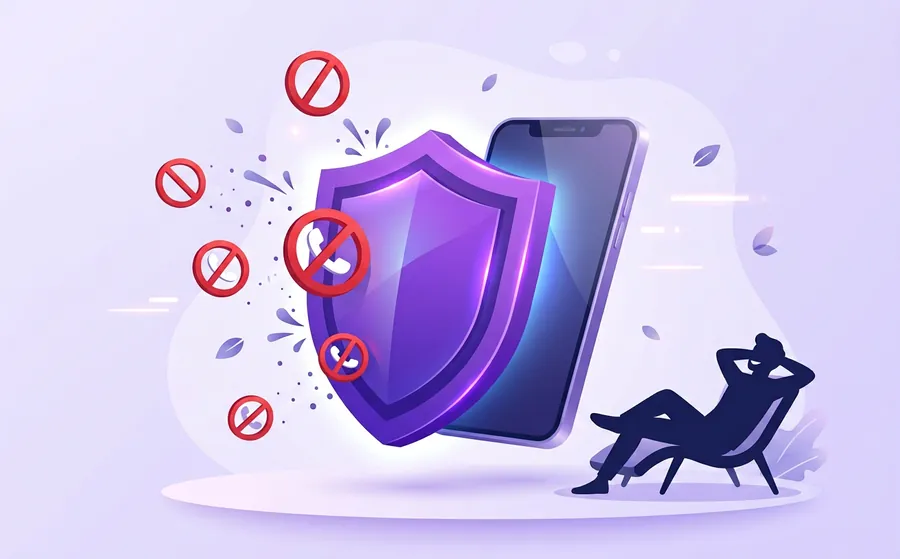

استعلام شماره
شماره ناشناس را جستجو کنید و اطلاعات ثبتشده درباره آن را ببینید.
پیش از جواب دادن بدانید چه کسی زنگ زده است. شماره ناشناس را برای ربات بفرستید، در چند ثانیه نام و گزارشهای مزاحمت را ببینید و مزاحم را بلاک کنید.
از جستجوی یک شماره تا مسدود کردن دائمی مزاحم، همه در یک مسیر ساده.
شماره ناشناس را جستجو کنید و اطلاعات ثبتشده درباره آن را ببینید.
در صورت وجود در پایگاه داده، نام و مشخصات تماسگیرنده نمایش داده میشود.
شماره مزاحم را به لیست سیاه اضافه کنید تا دیگر آرامش شما را بر هم نزند.
شمارههای مورد اعتماد را جدا نگه دارید تا هرگز اشتباهی مسدود نشوند.
اگر میخواهید فوراً بدانید یک شماره ناشناس از کیست، لازم نیست چیزی نصب کنید. وارد ربات شوید، شماره را بفرستید و نتیجه را همانجا ببینید.

برنامه مزاحمیاب واقعی | شمارهیاب حرفهای | نامبربوک بیشتر برای کسانی مناسب است که میخواهند هنگام تماس، نام فرد را بدون جستجوی دستی ببینند. در این حالت، اگر شماره در مخاطبین نباشد و گوشی به اینترنت وصل باشد، نام و مشخصات تماسگیرنده همان لحظه نمایش داده میشود.
روی دکمه «ورود به ربات» بزنید، وارد پیامرسان بله شوید و گزینه «شروع» (Start) را انتخاب کنید.
شماره ناشناسی را که با شما تماس گرفته کپی کنید و داخل چت ربات بفرستید.
اطلاعات شماره نمایش داده میشود. اگر مزاحم بود آن را به لیست سیاه اضافه کنید، اگر مورد اعتماد بود به لیست سفید.
شناخت نوع تماس به شما کمک میکند تصمیم بهتری بگیرید.
شمارههای جمعآوریشده در اختیار تیمهای بازاریابی قرار میگیرد و تماسهای تبلیغاتی، گاهی با پیام ضبطشده، در ساعتهای نامناسب میرسد.
خطرناکترین نوع. فرد خود را بهجای بانک یا نهاد رسمی جا میزند و کد پیامکی یا رمز میخواهد. هرگز این اطلاعات را به کسی ندهید.
تماسهای مکرر، سکوت یا بدگویی پشت خط. شناسایی شماره پیش از پاسخ، حس امنیت بیشتری میدهد و بلاک کردن را آسان میکند.
سیستمهای تماس انبوه به چند شماره زنگ میزنند و فقط وقتی اپراتور آزاد شد وصل میکنند. اگر خط بیصدا بود، شماره را بررسی و مسدود کنید.
تروکالر، آیرباتس و نتکین هم هر کدام کاربرد خودشان را دارند. این جدول فقط تفاوت دو روش را نشان میدهد.
| ویژگی | ربات بله | برنامه نصبی (مثل نامبربوک) |
|---|---|---|
| نیاز به نصب | ندارد | دارد |
| اشغال حافظه گوشی | تقریباً هیچ | بسته به برنامه |
| نمایش نام هنگام تماس | خیر، شماره را خودتان میفرستید | بله، روی صفحه تماس |
| مناسب برای | جستجوی سریع و گاهبهگاه | استفاده روزمره و مداوم |
| لیست سیاه و سفید | پشتیبانی میشود | بسته به برنامه |
جزئیات و امکانات برنامههای دیگر ممکن است تغییر کند؛ برای اطلاعات دقیق به صفحه رسمی هر برنامه مراجعه کنید.
ابزارهای فنی کنار راههای رسمی بهتر جواب میدهند. اگر مزاحمت ادامهدار یا تهدیدآمیز است، حتماً از مسیر قانونی هم اقدام کنید.
این ربات در پیامرسان بله فعالیت میکند. شمارهای را که از آن تماس گرفته شده برای ربات میفرستید و ربات با جستجو در پایگاه دادهاش اطلاعات موجود درباره آن شماره، مثل نام ثبتشده و گزارش مزاحمت، را نشان میدهد. برای شروع لازم نیست برنامهای نصب کنید.
امکانات اصلی ربات رایگان است. برنامه نامبربوک معمولاً نسخه پایه رایگان و امکانات پیشرفتهتر جداگانه دارد. برای جزئیات به صفحه خود برنامه نگاه کنید.
ربات روی بستر پیامرسان بله اجرا میشود و برای جستجو فقط به شمارهای که خودتان میفرستید نیاز دارد. با این حال هیچوقت کد پیامکی، رمز بانک یا اطلاعات حساس را برای کسی یا هیچ ربات دیگری ارسال نکنید.
بعد از شناسایی شماره میتوانید آن را از بخش «تماسها» یا «مسدودسازی» تنظیمات گوشی به فهرست بلاک اضافه کنید. گزینههای ربات هم شما را برای افزودن شماره به لیست سیاه راهنمایی میکنند.
بله. شمارههای همراه اول، ایرانسل و رایتل را میتوانید جستجو کنید. نتیجه به اطلاعات موجود در پایگاه داده بستگی دارد.
ربات بله نیاز به نصب ندارد و حافظه گوشی را اشغال نمیکند، پس برای جستجوی سریع مناسب است. برنامههای نصبی مثل نامبربوک میتوانند هنگام تماس، نام تماسگیرنده را مستقیم روی صفحه نشان بدهند. بسیاری از کاربران از هر دو استفاده میکنند.
این کد دستوری برای مدیریت پیامکها و سرویسهای تبلیغاتی در شبکه اپراتورهای ایران به کار میرود. برای اطلاع از آخرین روش فعالسازی، به اطلاعیه رسمی اپراتور خود مراجعه کنید.
دفعه بعد که شماره ناشناس زنگ زد، قبل از جواب دادن آن را از ربات بپرسید.
ورود به ربات شمارهیاب